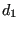
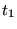
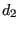
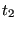
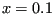
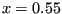

Next: *BUCKLE Up: *BOUNDARY Previous: Submodel Contents
Linear temperature function conditions can be defined between a *STEP card and an *END STEP card only.
First line:
Following line:




Example: *BOUNDARY,LINTEMP 1.,0.,0.,.1,300.,.55,650.
specifies a linear temperature function between a plane with equation  
Example files: .